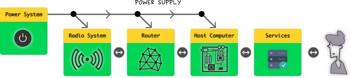

Hi there ! after reading the previous two posts on communication infrastructure, & social audit, its
influence on driving the fundamental questions about the way we connected, which might either make
you feel bored or helped u think further, i believe, that this & following posts will discuss about
the Design, Organization, Architectural, Practicality aspects of Commons Communication Infrastructure.
Contents are subject to update.
@/.\ ----+---------------+
/ \ | Just start it |
| already ! |
+---------------+
+---------+---- ( me )
| Dude ! |
+---------+
WHY ?
Every communication infrastructure requires an architectural organization, in order to
understand how the systems are connected together, based on their requirement & purpose,
with other subsystems or submodules. This architectural layout simply illustrates the
interfacing between the subsystems. Orchestration of this architecture results in a
implementable system having a degree of modularity. To achieve flexibility in the
system design, modularity is essential.
Through the basics !
Thus before opening the doors of excursion towards a life style for self reliable and self
hosted peer prodused emergent Internet, it is wise to know how & why the modules are orchestrated
based on requirements & expected flexibility. This necessitates one, to understand the
basic operations of a Communication System in general Technical terms. I believe a short discourse
would provide the required lexicon that will guide your further in interpreting the integration of
systems for communication.
Communication System
Any communication infrastructure will atleast require two parties and a common medium connected
between the two. The pre-requisite is that the two parties could understand each other languages
or speak the same language or create a new language to facilitate their communication wisely. Thus
the three conditions are :
atleast 2 parties ( parties >= 2)
common medium
common language
Let us consider a simplistic model of real world situation, two persons talking with each other...
Keeping the parties & language as a known constant, they could converse using the following mediums :
Simplistic Communication view
Script based information + intelligent carrier + physical transportation
Intentions are represented though the scripts defined by the chosen & agreed language
of communication. The parties involved communicate with each other by employing a
intelligent & loyal carrier or either semi-intelligent carrier to transfer information
to and fro. Thus the scripts are the information which will be interpreted back as
original intentions of the sender by the reciever. Usually humans or any other animals
trained to carry the information is the communication medium here. Thus the reliability
of communication completely depends upon the the medium employed.
Third party dependencyDependency parameters
What are all the parameters that influence the selection of communication medium ?
Spatial Distance
Secrecy
Life support
Here the link between the parties, always refreshed by the frequency of transportation
executed by the intelligent carrier. Thus the carrier (human or bird or animals) used for
for transportation establishes the link which in turn is interpreted as the medium of
communication.
Electrical information + electromagnetic carrier + link layout
With the discovery of electromagnetics, radio, and formation of electromagnetic field
theory, advancements in semiconducting electronics, information theory : created massive
disruption in the way we communicate with each other. Communication needs no more
intervention of humans or birds - instead replaced with systems which can continuously
be operated to enable communication.
Suddenly everybody can afford to own a communication channel, and whoever subscribes to
lease a communication channel, can readily converse with the other using some unique
identification. This seeded the social & private communication media. In the realm of mass
communication, similar technology was adapted using broadcasting mechanisms which merrily
accelerate propaganda and speeches of leaders to reach the masses within blink of an eye.
Simplistic but Radio based Communication view
People are no more seperated by Spatial Distance. Electromagnetic field & affordable Electronics
virtually eradicated the distance. With rapid changes in mechanized communication systems,
every human in the loop doing repeting stuff are replaced by every increasing electronic
machines which decreases the supply of life support mechanisms & policies in the infrastructure.
With more & more marketing of communication systems, it gained social mass,
which further raised the pressure on improving technologies that could scale with the
density of subscription. This created a perpetual loop between the technology & social
gravity.
Pepetuating loops with dependency & profit mechanisms
Now the influence is shifted towards a different set of parameters :
Content Density
Capacity (number of subscribers)
Medium Sharing & Management
Enjoy the Transition :)
Technology is itself a continuum of transitions adapting changes that arise from time to time.
Communication technology is no matter different from it, and thus people has to adapt for it
provides the necessary facility that enable them to communicate - a vital necessity for survival.
When the degree of change is rapid, probabilistically there is a good chance for people to
get confused about choosing a system that is right for them. Similarly when one is interested
in taking a self-reliance path for communication, they will adapt to the requirements and available
systems.
Centralized Process
Transitioning from a centralized communication infrastructure towards a alternate emergent
communication system will have its troughs & valleys providing an artistic perspective along with a
scientific perspective to the practice. It is about being part of the change itself, rather than
only enjoying the fruits of change. This marks the true participation for a democratic & rightful
owning of the infrastructure in cultural form.
let Communication be part of Human Culture and not be a part of Profit churning Automaton !
let Communication be a Necessity & Human Right
let Communication not be a Commodity
Is it worth ?
The transition serves as a guide for critically thinking about leaning the services they depend upon,
how to replicate a similar functionality and interface locally in a self hosted way. Help understand the
distinction between computation appliance, information appliacne & communication appliance.
Curiosity, Dreams & Impetus !
So before, going through the process of making ourself, self sustainable in communication, the key moudles
necessary to integrate the system has to be understood. Furthermore, the phases has to be transition
has to be practiced & experienced in a continuous manner, that involves learning & doing stuff in a
collaborative way. The phases of transition usually involves from moving towards a self hosted services
erection, and then furthering towards forming a self reliable communication system emerging a grass-roots
network.
U are the Product !!!
Independence Supportive Systems
Ideally, independence is a mere hope, that helps us to be creative in ideas. Afterall, the societies we live
in have interdependence on each other through sharing. We need systems, that :
help us to be productive
increases civic participation
does not subvert journalism
does not subjugate our liberty
help increase equlity & empathy
does not allow centralized control
helps us to be critically progressive
help form networks as part of culture
help us practice civil liberties & duties
empower us to have a lean government
does not make us gears of consumerism
help us regulate information over loading
empower us to eliminate social & economic issues
... and other dreams :)
What is needed ?
Modules that enable us to travel the transition are key ingridients in cooking a commons communication
infrastructure. These modules have already been designed and shared based on commons based peer production
principles. However, its adaptation is required more than ever. Current infrastructure have only provided
us with consumer appliances that merely makes us easy to generate and consume content. In short, the
gadgets that sit around us are mere information appliances, & communication is just seemed as
part of the information brokering process.
Power = Renewable Energy + Energy Storage + Management
Radio = Radio Electronics + Wave guides + Antennas
Applications = Anonymization + Ease of Communication
Whereas, the transition from current centralized infrastructure to emergent networks, will
enable us to have our own communication appliance build by peers in a collaborative
way. Information, Communication, Network can then become part of culture instead
of cogs of commodities of profit automaton. The following simplified model of the system
might help in understanding the relations between them and how they are in unison
form a local communication infrastructure.

Simplistic Organization
Phases of Transition
The transition from Centralized infrastructure dependency towards a self sustainable
communication system, that help emerge grass-roots commons owned communication network
infrastructure consists of three phases :
From Centralized Services to Self Hosting Services
Making Self reliable Communication infrastructure
Contributing for emergent commons communication network
In short, the whole story is about how to distribute the required resources & technology
by deconstructing the complexity of centralization, leaning it to fit in economically
optimal way. This creates a more probable Zero Sum Game situation, that alleviates
the pressure from existing infrastructure, increases civic participation, empowers local economy,
and work towards the above listed supports...
Today most of the populace uses centralized web services that provide a number of solutions
that are attractive in many dimensions. Since both the infrastructure & services
are centralized, we have to take a double end attack on the problem. The community
has to take advantage of the open systems, free software alternatives, protocols, operating
systems, etc. to constract a alternative strategy and solution/stack, that includes the current
online services.
One Step at a time, & One Service at a time.
One service at a time - towards a lean & mean self hostable service stack
While Phase 1 serving the web needs, through which every user can initiate a communication
in a self hostable manner, there is a necessity to construct alternative communication
infrastructure upon which the existing and future web services can run upon. This involves
creating new protocols, firmware for the protocols, abstraction, tunable/definable radio hardware,
modules that can intake the weather & anthropological conditions, and use the communication
channel effectively, always looking for reliability rather than luxury. Ultimately this
creates a self reliable communication infrastructure, which aims for a flexible yet concrete
structure.
Radical & Alternative thought process is required for Change
Need for a Configurable N/W RouterConfiguratble Router that can dynamically configure RadioNeed for a Flexible Physical Medium (Radio)
This phase also addresses, the need for 24 x 7 x 365 operation with little maintenance.
The main factors why people constantly flow towards centralized services are :
24 x 7 x 365 uptime
overwhelming resource availability for seemingly negligible cost
no need to maintain the infrastructure
One has to be critical about building a communication infrastructure, and running self hosted web services that
actually enable them to communicate easily with others. Indvidually one will not have all the economy to keep on
expanding the underlying hardware infrastructure based on the always expanding requirement and desires. How will
one announce about their services, blogs, websites, social participation, etc.. ? What will happen if so many
tries to access the self hosted services, beyond a threshold level - beyond which the hardware resources needs
to be upgraded & expanded.
Thus communities has to build infrastructure, protocols, services, applications, with the following properties
in their thought process. One cannot deny that the open source development model has already addressing them
properly. Such open strategy have helped communities to create projects that are lean, mean, infrastructure
independent, democratic, transparent, secured, hackable, .... among other really beneficial usecase factors.
Here the complexity involved in bring the stability, flexibility, portability are not hidden, but transparently
shared between anyone who is interested to care to look at.
On the other hand, proprietary - conventionally closed, centralized systems limited by their business models
and policies tend to close their development methods & practices, nobody out of that infrastructure do not know
how the resources are managed, expanded based on user requirements. Such practice have created a perpetuating
resource hungry system that pushes technological frontier synthetically while at the same time taming
the users to imagine that the system can supply overwhelming, if not not a indefinite resource with "best
stability & reliability".
With Phase 1 & Phase 2 serving the needs of the infrastructure, it has to be propagated for use.
No, not only propagation, the infrastructure has to gain social density, the self hosted
services & applications has to be attractive & fun to use. That is when Word of Mouth
effect kicks in & further drives Network effect, that substantially spreads through
the current infrastructure, that leads to the change in infrastructure itself. It is almost
similar to the current infrastructure is guiding the populace to use a much better infrastructure,
letting itself die...
N/W effect : Food Systems ParticipationN/W effect : Peer Production in Textile
To enable individual creativity and help each individual network locally, necessary infrastructure has to be provided
for each community and to each individual when possible. By adapting the same principle, it is necessary to view
communication in such light. When communication is commons driven, will help form communities, cross-pollinate with
other communities instead of chasing after reckless business models. Participation will be effective, when confusion
is less & rationality is more. Rationality necessitates critical thinking, civic participation in governance, policy
research, etc.. Such research again depends upon knowing the ground truth information in field. The current
structure of internet, mostly does have lot of pseudo-scientific, conspiracy, paranoia driving
elements. Massive flow of such information through centralized social networks, overwhelms the criticial research data
and often obscures it.
N/W effect : Peer Production for Home products
Searching, Identifying, remembering, of such sources & to further peer review have been an additional burden. Remember
Information Overload ? When communities form with a governance in it, these false thoughts, unproved data,
non-peer reviewed, unscientific, conspiracy stories can be weeded out. Such phenomenon is already a part of current
Internet. With local Organization, problems can be addressed easily, with global ideas and customizations, which might
not be possible with individual action. This again necessitates availability of peer produced tools & infrastructure
to curb these erupting dissonance. When individuals economy & business is supported by a commons infrastructure, it
becomes part of the life, instead of a purchasable unit of commodity from market. Local economies cannot be
dominated by Centralized Controllers.
N/W effect : Peer Production in Recreation, Arts & Architecture
We shall discuss about Peer Production in another article deeply :)